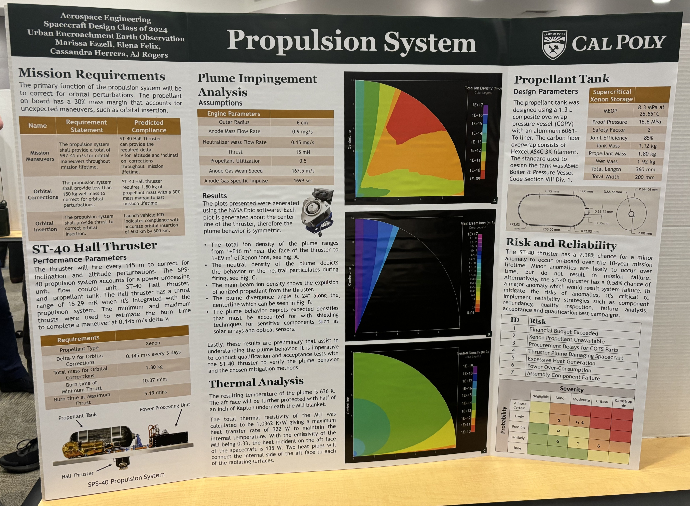
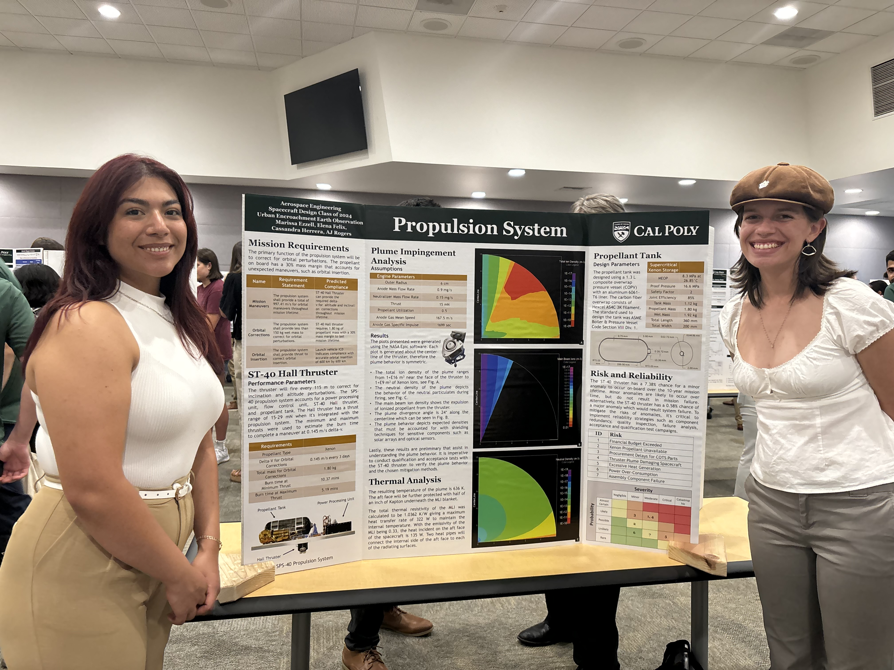
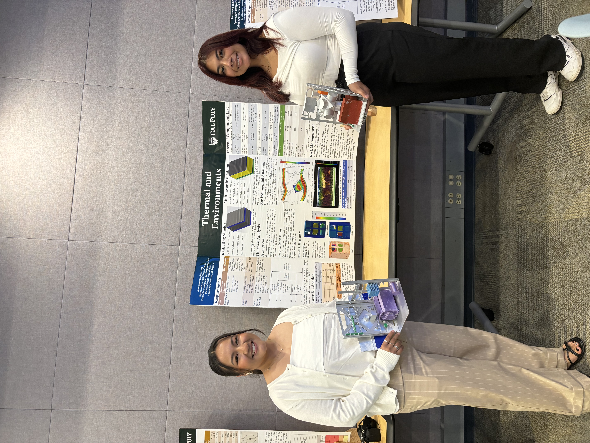
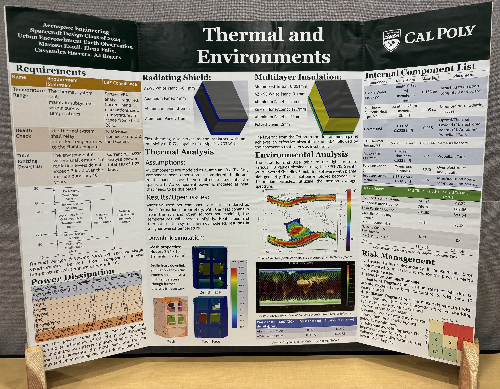

Mission Overview
Our senior design project focused on developing a satellite for a 10-year mission to track water resources across the African continent. The satellite was designed to provide valuable data for climate research, agriculture, and resource management.
Propulsion System


Thermal & Environmental Systems
To visualize our design, our class team created a 3D-printed small-scale satellite model. This allowed us to present subsystem integration at the showcase.

